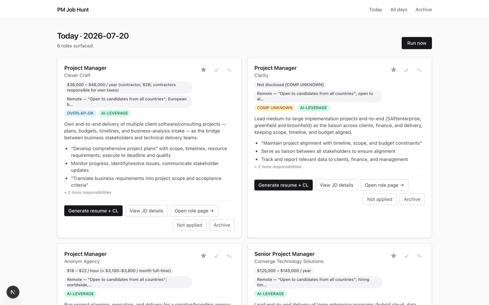
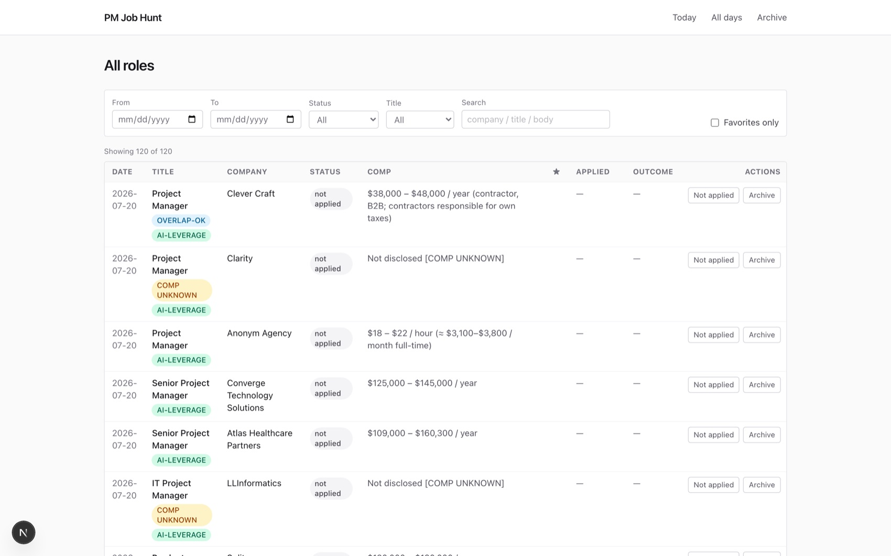
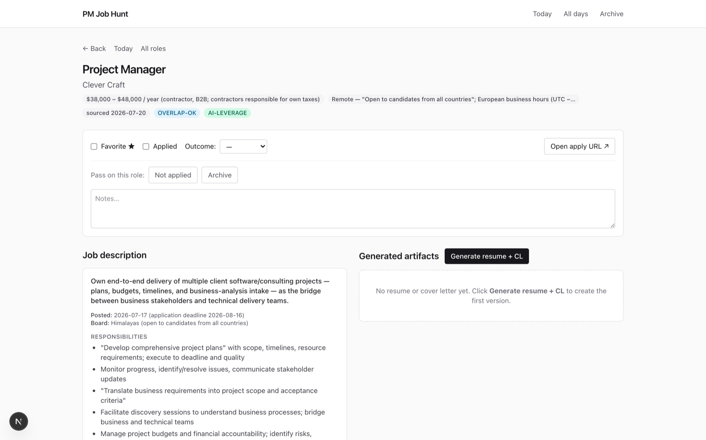
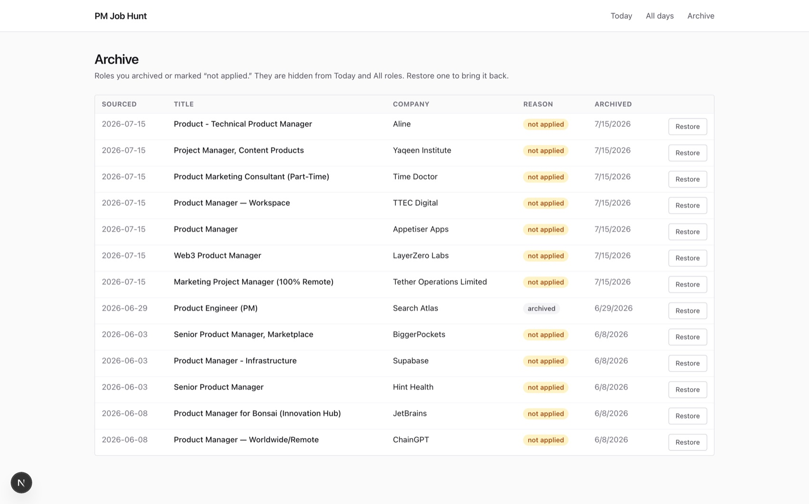

AI Job Hunt Cockpit
A local-first application assistant I built and own as Product Owner. It discovers remote Product Manager roles, scores them against a locked fit profile, tailors my resume and writes a cover letter per role, renders polished PDF applications, and tracks every opportunity through a dashboard. It runs entirely on my machine and drives generation through my local Claude Code subscription, so my resume, the job data, and every draft stay on disk under my control.

Applying to PM roles well is repetitive and slow. Each strong application means finding fresh, genuinely-matched remote postings, reading the live job description, rewriting the resume to mirror its language, drafting a tailored cover letter, exporting clean PDFs, and logging it all so nothing slips.
Done by hand that is hours every week, and the tedium quietly pushes you toward generic, lower-quality applications.
The pipeline is discover, score, tailor, generate, export, track.
- Discover. A "Run now" action spawns a detached research run that scrapes PM listings across boards (LinkedIn, Wellfound, RemoteOK, We Work Remotely, Remotive, Himalayas, Lever- and Greenhouse-hosted boards, and direct career pages) and writes a dated digest of net-new roles. The run is hardened with a single-run lock, retries with backoff, and a status marker, so a failed run is visible instead of silently vanishing.
- Score fit. A locked hunt profile gates every role on title scope, years-of-experience band, remote-only, geographic eligibility, and timezone, and it flags rather than silently drops on compensation, tagging roles below-floor, comp-unknown, or overlap-ok so I decide.
- Tailor. When I pick a role, the app re-fetches the live job description at click time, verifies the posting is not dead, and falls back to a headless-Chromium render for JavaScript-heavy boards. It then tailors strictly against that fresh JD, never a stale snippet.
- Generate. The tailoring call composes my profile, master resume, and a tailor brief into one prompt and returns a structured resume and cover letter. When the JD implies experience my resume only hints at, it asks me a short list of adjacency questions before finalizing, rather than inventing to fill the gap.
- Export. Generated markdown renders to print-ready A4 PDFs through templates matching my established resume design.
- Track. Every role carries status, favorite, applied state, outcome, notes, and versioned document history in a dashboard with Today, All Roles, and Archive views.



- A daily research runner that produces a deduped digest of fresh, profile-matched roles.
- A live JD verification layer with deadness detection and a headless-render fallback, so I never tailor against a gone posting.
- A tailoring engine with a strict output contract and a built-in "ask before fabricating" step.
- Automatic document versioning (each regenerate archives the prior resume and cover letter) plus saved JD audit copies.
- A PDF renderer that matches my resume brand.
- A tracking dashboard over an on-disk status store, with role detail pages and archive handling.
Local-first by design: Next.js App Router with React and TypeScript, Zod for input validation, and the local filesystem as the datastore. Generation shells out to my local Claude Code CLI, so no API key or cloud upload is involved.
Playwright with Chromium, kept out of the app bundle and invoked through small Node scripts, powers both the JS-rendered JD fetch and the HTML-to-PDF rendering. The research run is a detached background process with its own lock, retry, and status file.
The Cockpit automates the grind, discovery, fit-filtering, tailoring, and paperwork, while keeping me in the loop exactly where judgment matters: which roles to pursue and how to answer the questions that keep an application truthful. It turns hours of repetitive work into a few reviewed clicks, and frees that time for interview preparation.